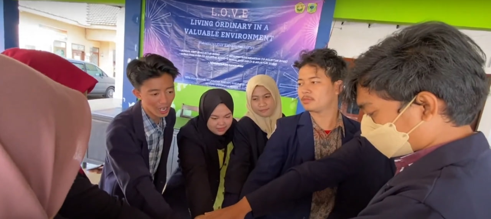
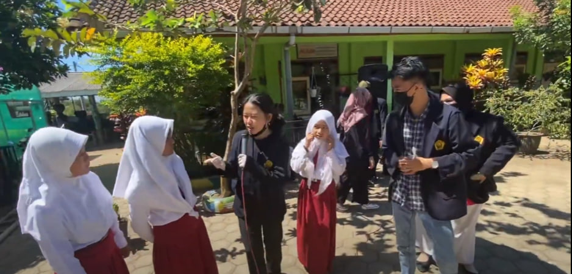

Community Service Program
The KKN program is a community service activity aimed at developing villages and village resources. The duration of the KKN program organized by the University of Jember is 35 days. Additionally, every student is required to participate in the KKN program.

Our group, which is group 296, was assigned to Maesan Subdistrict, Gunung Sari Village. On the first day of our activities, our group conducted an approach, adjustment, and introduction to the village. We found that the majority of problems in the village were related to stunting. We attempted to approach and collect data regarding this issue. Finally, we decided to conduct a public awareness campaign for the community.
What we do?
In addition to conducting public awareness campaigns, we assisted the village officials in developing the village. We also supported the local health center's program by providing immunizations and offering support in the prevention of stunting.

For 35 days, we assisted medical personnel in providing immunizations in each village. Every week, we rotated or changed the immunization locations. Fortunately, our group included one member from the Faculty of Medicine and three members from Social Welfare, which facilitated our efforts in conducting public awareness campaigns and forming cadres for stunting prevention.
In addition to preventing stunting, we implemented a program to evaluate village facilities. Fortunately, the quality of health facilities in Gunung Sari Village was quite adequate. This was evidenced by the availability of public toilets, trash bins at street corners, and the weekly cleaning of public places.
Given the sufficient infrastructure, we turned our attention to the next crucial issue: educating children on clean and healthy living habits. This initiative went very smoothly.

On our last day in Gunung Sari Village, we received a heartfelt farewell. On that day, the community expressed their gratitude towards us for providing basic education to the villagers, village officials, and especially to the children, who were our primary target. We believe that children are the future of the nation, capable of advancing the country and bringing about positive changes for a better life.